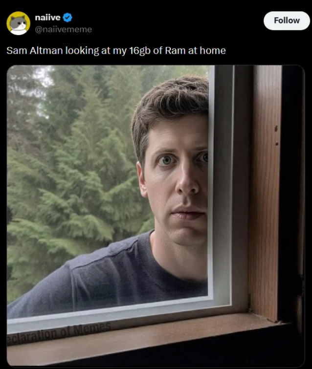

christian@local — llama-server :8080
christian@local:~/models$ ollama run qwen3.8:27b
RUNNING LLMs
LOCALLY
Notes, cheatsheets, and a working setup for running LLMs on your own hardware — no cloud, no subscription, no per-token bill.
github.com/christianmoralescalani/llm-larder
model: Qwen3.8-27B · Q4_K_XL · ctx 131072
$ 02 — interlude
Sam Altman, staring at my 16 GB of RAM
him: 105 H100s, liquid cooling, a small country's power grid
me: 16 GB, a fan the size of a hairdryer, and hope

— every local LLM dev, 2026
llm-larder02 / 11
$ 03 — why local
Four reasons to run it yourself
PRIVACYdata never leaves the machine
COSTno subscription, no per-token billing
OFFLINEworks on a plane, in a cabin, anywhere
CONTROLyour hardware, your parameters, your model
llm-larder03 / 11
$ 04 — foundations
Four words carry the whole talk
tokenthe unit of everything: text, context, speed, cost
parameterwhat "7B" / "27B" means: the size of the model
quantizationcompressing weights (Q4_K_M, Q8_0…) so big models fit
KV cachethe memory that grows with context — and eats VRAM
llm-larder · 00-foundations/04 / 11
$ 05 — will it fit?
The only formula you need
VRAM = weights + KV cache + overhead
# = params × bytes-per-weight + f(context) + ~1 GB
# worked example
Qwen3.8-27B @ Q4_K_XL ≈ 16 GB weights + ~1–2 GB KV @ 32k
# = params × bytes-per-weight + f(context) + ~1 GB
# worked example
Qwen3.8-27B @ Q4_K_XL ≈ 16 GB weights + ~1–2 GB KV @ 32k
→ fits a 16–24 GB card. If it fits, it's fast. If it doesn't, you hit the CPU-offload speed cliff.
llm-larder · 02-hardware-and-vram/05 / 11
$ 06 — getting a model
Search → inspect → download
01search — task + size + quant: "27B · Q4 · GGUF · instruct"
02inspect — files, quant, context *before* the 15 GB download
03download — hf download <repo> <file> — single file, resumable
The Hub is the Docker Hub for models. GGUF is the local format.
llm-larder · 01-huggingface/06 / 11
$ 07 — choosing a runtime
Three runtimes, one API
ollama
fastest to start
pick when: personal use, few users — one command, zero config
llama.cpp
most control
pick when: every flag, GGUF, vision — the deepest-control runtime
vllm
max throughput
pick when: many concurrent users — PagedAttention, continuous batching
all three speak OpenAI-compatible — your client code doesn't change when you switch
llm-larder · 03-ollama/ · 04-llama-cpp/ · 05-vllm/07 / 11
$ 08 — live: docker run → chat
The actual setup
docker run -d --gpus all -p 8080:8080 -v ./models:/models \
ghcr.io/ggml-org/llama.cpp:server-cuda \
-m /models/Qwen3.8-27B-UD-Q4_K_XL.gguf --mmproj … \
--reasoning on -c 131072 --flash-attn
ghcr.io/ggml-org/llama.cpp:server-cuda \
-m /models/Qwen3.8-27B-UD-Q4_K_XL.gguf --mmproj … \
--reasoning on -c 131072 --flash-attn
Q4_K_XLthe quant — why it fits (slide 5)
-c 131072context — the KV cache that eats VRAM (slide 4)
--reasoning onit's a thinking model — the budget is a dial (slide 9)
llm-larder · 04-llama-cpp/ · 08-apis-and-clients/08 / 11
$ 09 — the dials
Sampling is the quality dial
temperaturerandomness — lower = more focused
top_p · top_k · min_phow the candidate set gets cut
reasoning budgetthinking on / off / limited — more thinking = better, slower
working defaults: --temp 0.6 --top-p 0.95 --top-k 20
llm-larder · 06-sampling-and-prompting/09 / 11
$ 10 — beyond text
Same runtimes, same API — new model files
visionimage → visual tokens; an image costs context (the --mmproj flag from slide 8)
embeddingsthe RAG building block — text → vectors
audioWhisper-family transcription
same formula, same flags — just different model files. The one new idea: images eat VRAM.
llm-larder · 07-multimodal-vision/10 / 11
$ 11 — keep going
The repo is the next step
llm-larder/
├── 00-foundations/ … 08-apis-and-clients/ · 9 folders
└── each folder: notes/ · cheatsheets/ · docs/ · videos.md · Index.md
├── 00-foundations/ … 08-apis-and-clients/ · 9 folders
└── each folder: notes/ · cheatsheets/ · docs/ · videos.md · Index.md
New to a topic? Open its Index.md — it says what to read first, and in what order
github.com/christianmoralescalani/llm-larder · Q&A11 / 11